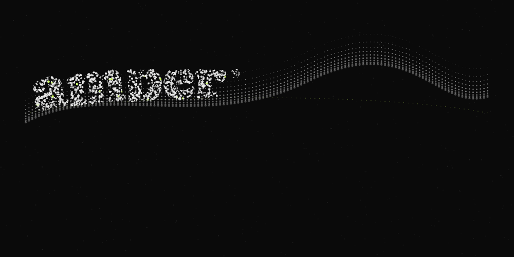
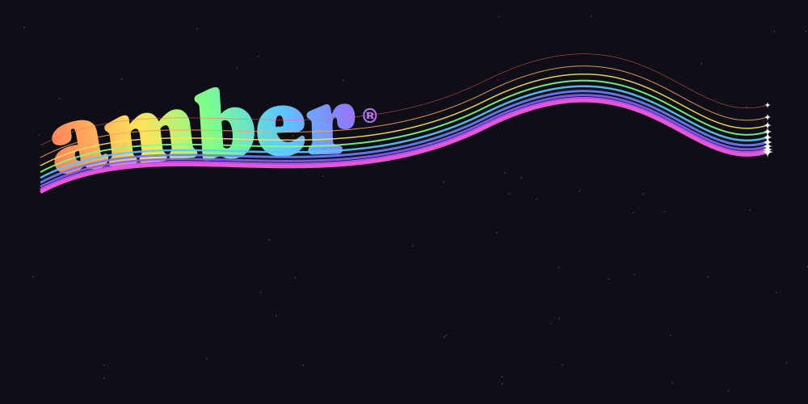
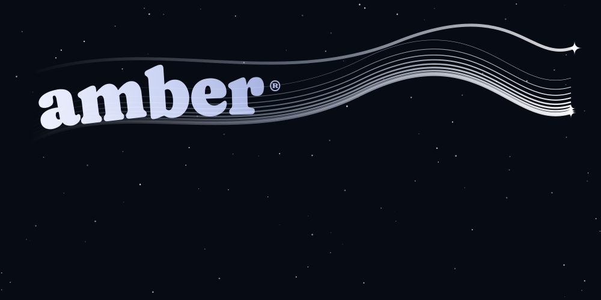
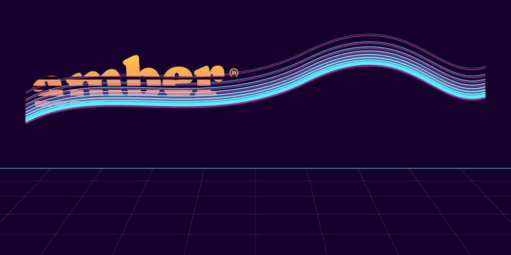
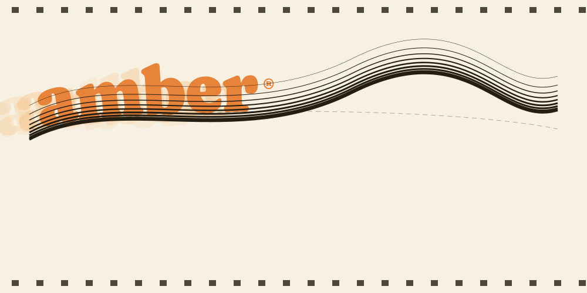
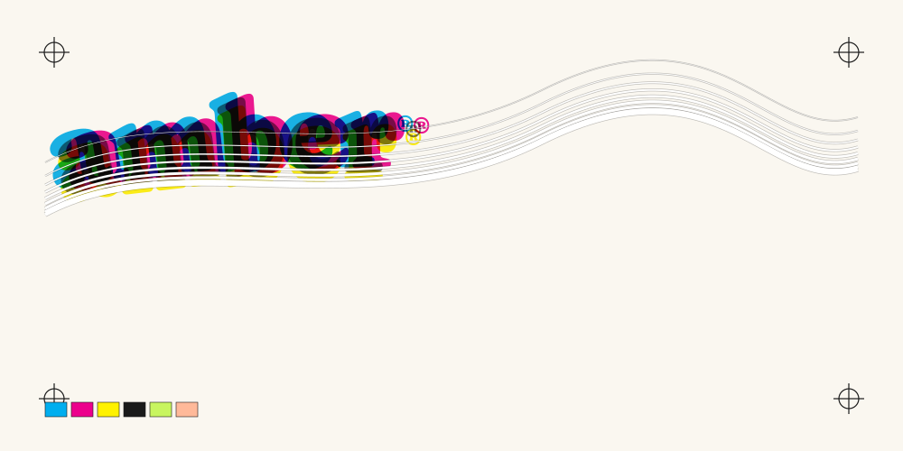
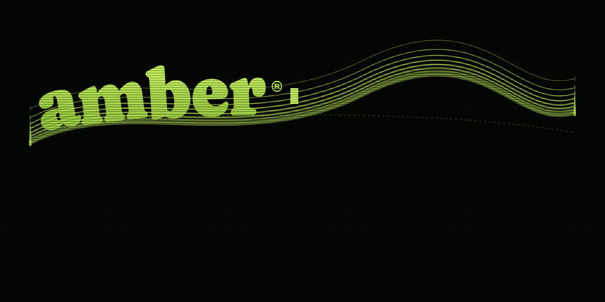

plur1bus plates — the amber® mark, ten directions
Every plate keeps the canonical Caprasimo wordmark and the nine swoosh hairlines; the material, ground and grade around them change.
 00 · reference — canonical mark, ink frozen
00 · reference — canonical mark, ink frozen

01 · stipple unum 02 · bit8 pixel
02 · bit8 pixel 03 · dither4 press
03 · dither4 press
04 · prism rainbow
05 · comet night
06 · synthwave sun
07 · zoetrope onion
08 · cmyk press09 · pony meadow
10 · terminal sweep